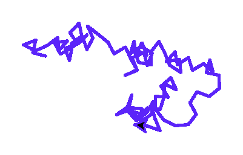
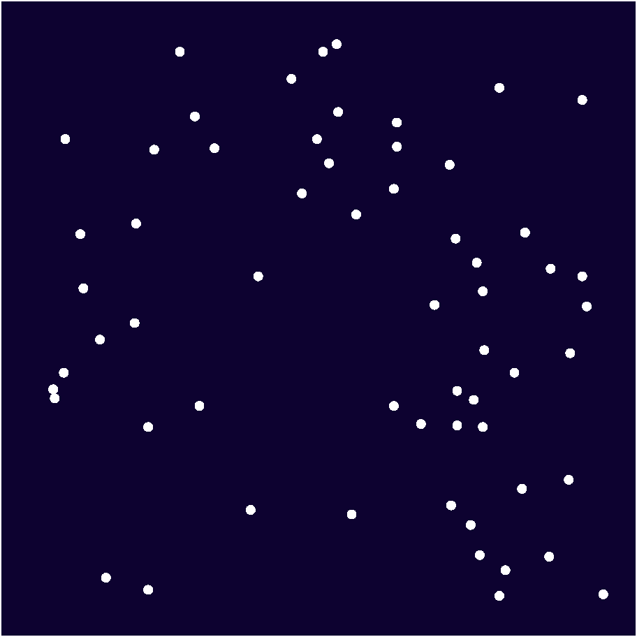

Глава 10 · Немного автоматизации!
Случайные узоры Turtle
Каждая итерация цикла может сделать своё, заранее неизвестное движение — а seed() делает случайный результат воспроизводимым.
Циклы и случайность
Модуль random из главы 9 отлично сочетается с циклами —
каждая итерация может принимать своё, заранее неизвестное решение. Чтобы результат можно
было воспроизвести и проверить, в примерах ниже используется
random.seed(...) — она делает «случайную» последовательность
одинаковой при каждом запуске.
Случайное блуждание
sluchajnoe_bluzhdanie.py
import random
random.seed(7)
for _ in range(100):
artist.setheading(random.randint(0, 360))
artist.forward(10)sluchajnoe_bluzhdanie.py
import turtle
import random
random.seed(7)
screen = turtle.Screen()
screen.setup(width=420, height=420)
artist = turtle.Turtle()
artist.speed(0)
artist.pencolor("#5B24F9")
artist.pensize(2)
for _ in range(100):
artist.setheading(random.randint(0, 360))
artist.forward(10)
screen.exitonclick()Результат выполнения

seed() — не про случайность фигуры, а про воспроизводимость
Без
random.seed(...) результат был бы каждый раз новым — что интересно для творчества, но неудобно для практики, где важно проверить конкретный, повторяемый результат.Звёздное поле
zvezdnoe_pole.py
import random
random.seed(3)
for _ in range(60):
x = random.randint(-190, 190)
y = random.randint(-190, 190)
artist.goto(x, y)
artist.dot(6, "white")zvezdnoe_pole.py
import turtle
import random
random.seed(3)
screen = turtle.Screen()
screen.setup(width=420, height=420)
screen.bgcolor("#0D0230")
artist = turtle.Turtle()
artist.speed(0)
artist.hideturtle()
artist.penup()
for _ in range(60):
x = random.randint(-190, 190)
y = random.randint(-190, 190)
artist.goto(x, y)
artist.dot(6, "white")
screen.exitonclick()Результат выполнения

★★ Самостоятельная задача
Своё случайное блуждание
Поменяйте seed на другое число и количество шагов — сравните, насколько по-разному выглядит путь.
Практика: случайное блуждание и звёздное поле
Модуль turtle открывает нативное окно Python — выполните локально в VS Code, PyCharm или Jupyter
Практика выполняется локально